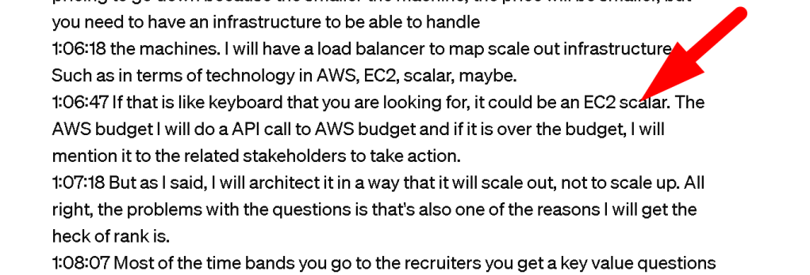
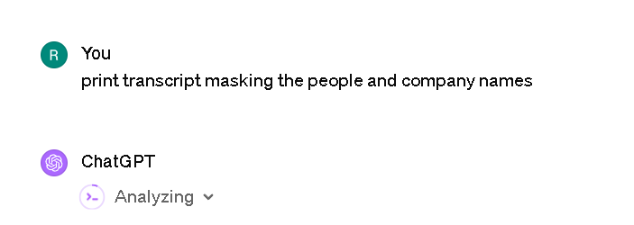

Embracing Creativity: Why Building Environments and Crafting Narratives Matters More Than Acing Tech Interviews
In the rapidly evolving tech landscape, where innovation and creativity are at the forefront, the conventional approach of merely trying to pass a recruiter's key-value based technical questions is becoming increasingly insufficient. The essence of technology and development is not just about solving problems but about creating new possibilities. This is why, as burgeoning developers, engineers, or creators, we must shift our focus towards building environments and expressing these creations through narratives, such as videos, to truly showcase our capabilities and vision.
The Limitations of Traditional Technical Interviews
Traditional technical interviews, often characterized by key-value questions, test a candidate's ability to solve specific problems under pressure. While this can demonstrate a candidate's technical proficiency, it hardly scratches the surface of their creative potential or ability to innovate. These interviews fail to capture the essence of what it means to be a creator in the tech world - someone who can envision, design, and implement solutions that push the boundaries of what is currently possible.
The Power of Creation and Storytelling
Creating environments, be it through coding, design, or any form of development, is a deeply immersive and expressive process. It allows creators to not only solve problems but to also invent new ways of interacting with technology. By building these environments, creators can demonstrate their understanding of complex systems, their ability to think critically and laterally, and their passion for pushing the envelope of what's possible.
Expressing these creations through narratives, particularly videos, adds another layer of depth to this process. Videos allow creators to tell the story of their creation - the challenges faced, the solutions devised, and the impact of the final product. This form of storytelling is powerful; it connects on an emotional level and demonstrates a creator's ability to communicate complex ideas clearly and engagingly.
Why This Approach Matters
-
Showcases Problem-Solving Skills: By focusing on building and creating, you naturally showcase your problem-solving skills, not just theoretically but in practical, tangible ways.
-
Demonstrates Technical Proficiency: Building environments from the ground up demonstrates a deep understanding of the technologies and tools at your disposal.
-
Highlights Creativity and Innovation: This approach allows you to showcase your creativity and ability to innovate, which are invaluable in the tech industry.
-
Improves Communication Skills: Expressing your creations through narratives, especially videos, hones your ability to communicate complex ideas effectively, a critical skill in any field.
-
Builds a Portfolio: Instead of just a resume, you build a portfolio of tangible works that can speak volumes more about your capabilities and potential.
Moving Forward
The journey towards becoming a more creative and innovative creator in the tech industry begins with a shift in focus. Start small by identifying a problem you are passionate about solving or an aspect of technology you are excited to explore. From there, begin building your environment, piece by piece. As your creation takes shape, think about how you can share its story. Whether through a blog, a video, or a presentation, find a way to communicate the challenges you faced, the solutions you created, and the impact of your work.
In conclusion, while traditional technical interviews may still be a stepping stone into the tech industry, they are not the endpoint. The real journey begins when we start creating, building, and sharing our visions with the world. By focusing on these aspects, we not only enhance our technical skills but also develop a deeper understanding of the impact and potential of technology. Let's embrace this creative journey and redefine what it means to be successful in the tech industry.
How i fail infront of the judge ?

Here is todays meeting with the recruiter and the rationale why i am building devops.engineering service product generated by loom and gpt

What we talked
Here's the transcript with the company and individual names masked:
0:03:44 Oh, dude, I'm doing fine, [Name], how did it go? Good, good, very good though. I was keen on speaking to you.
0:07:23 I did check out the app via website. It looks very interesting. All right. Uh, I work as a DevOps contractor for the last uh, seven years.
0:09:29 And my last contract was with [Company A]. Uh, I'm a global contractor, what I do is I go to the companies, I do assessments for their continuous integration and continuous delivery pipelines for a billion dollar plus enterprises with 10 plus teams most of the time.
0:09:52 I work as a release training engineer for them, which means I'm able to go through the enterprise resources, outline the key decision makers, and as well as deliver hands-on implementation for the enterprises.
0:10:10 In the meantime, I also make sure that I train the companies while I'm working in, so they have a delivery on demand structure that is set for them.
0:10:22 I set them up for the last role. I do set them up the automation framework that is needed, either in [Cloud Service Provider 1], [Cloud Service Provider 2], or [Cloud Service Provider 3], also platform, using technologies like logic apps, [Cloud Service Provider 1] step functions.
0:10:42 So this is my main focus to be a really strange engineer. I did contracts around this previous contract before [Company A] was in Switzerland, [Company A], [Company A].
0:11:06 They are a big venture company and a financial company, but they have all these other companies that they have as well.
0:11:15 Previously, before that contract, I had a contract with [Company B], [Company B] is one of the unicorns in the healthcare there in Switzerland.
0:11:25 You can find that from my CV as well. I put all the details on LinkedIn as well. If you click on the project section, you should be able to find them out on the project section.
0:11:50 Good news facts. [Company B] is a Switzerland-based company. I did their migrations. So as I work as a really strange engineer, I'm also handsome as well as I do the management teams as well.
0:12:06 This contract was more handsome doing the git migration from their old visual sources, repositories that was geared towards that. So I worked with the development teams and the operational teams.
0:12:20 The [Company C] contract, one previously to that was based on AI and GPT and their machines that were getting created in the cloud that was more operations structured.
0:12:35 I was creating their Kubernetes clusters, and I was focused on creating their GPU-based GPU-based sources in the cloud for them.
0:12:47 Before that, I worked in [Company D]. I created them a structure called Infrastructure code for them to be able to deploy their sources, resources, logic gap, workflow, automations to the cloud.
0:13:02 Before that, I worked for a company called [Company E]. These are all around the globe. They are one of them is in Oman, one of them is in Switzerland, one of them is in Canada.
0:13:12 The other one is in England. The [Company E] Fund was focused on creating API gateways and the automation around the API gateway in [Cloud Platform], so that was in the middle though that was close to the operations as well as to the development teams.
0:13:33 Before that I worked for a company called [Company F], I created them an infrastructure automation to be able to release that this is a London-based financial company.
0:13:44 that I created their automation structure to release their environment per customer. They need the multi-tenant of the environment, so I created them an environment that that can do this.
0:13:57 Before that I worked for a company called [Company G], which I managed their 100 plus microservices in a platform called Octopus.
0:14:08 And before that you can go through the CV, but they are mostly all of them are related to development operations and the security.
0:14:19 I make sure that I get the experience for the development operations security so I can become the release training engineer.
0:14:29 My main goal for the companies is to do a release on demand, which is if a company is releasing their software in two years.
0:14:39 I make sure that they can release in two months, two days, two minutes. I can make that process go through.
0:14:46 There are not that many IT people in the world that has experienced working 40 plus contracts all over the globe.
0:14:55 So I have that experience. And I'm on the top. I have a plural site trainer. I'm a certified plural site trainer.
0:15:03 So what I do is I capture all the knowledge and I it into a video format so I can assess the team members in the company in the enterprises so they can do what I'm doing there and they can keep on the work being able to do the delivery on demand so that is in a nutshell what I do yes I finished my most
0:15:40 recent contract I finished it last month in April beginning of April. Yes, one of the reasons I was doing the contracting was seven years ago, I had a visa that's related me to work with, work with only contracts that required me to do that.
0:16:15 I got an indefinitely determined and in three months I will get the British citizenship. Before all this contracting, I was working in [Company H] as a cloud solution architect, there's an employee and before that I was working in [Company I], but once I immigrated I had to work as a contractor.
0:16:50 Yes, because I I can write down get a permanent role within definitely to remain, but the market is a bit dry I guess at this time.
0:17:00 So with [Company A], the good part about contracting is I'm not only bonded to the London market, Cambridge market. I will be able to go to different places in the world.
Continuing from where we left off, here's the remainder of the transcript with company and personal names masked:
0:17:29 First of all, I want to have consistency because once you are working as a contractor, a big part of your job is doing the sales and marketing, not the technology piece.
0:17:41 So if you want to be a successful contractor, you have to do a bit of marketing though because at the end of the year business but I want to focus on the technical side and I did travel a bit though if you look at the CV I did travel a bit and if I can get something that will be able to support it such
0:18:02 as when I worked in [Company H] I had stocks options but not every company is [Company H] also but the [Company H] required me to work in one location and that was blocking my immigration so I couldn't say in my person.
0:18:42 In seller advice I'm not targeting that much though in terms of my last seven years I made around a million pounds in gross revenue so but I did look at the [Company J] website and I did look at what you guys are doing in terms of the [Company J], they finder and the this is something that I'm going towards to and I'm
0:19:09 really lining up a lot because you guys are working both with the dev teams and with the operations with the platform teams that you guys call it so that is really lining up with me though and you guys are at a startup as far as I understood my main motivator financially will be the stocks and the options
0:19:30 because I do think this release training engineering, you guys call it API, they find everybody calls it a different name, but at the end of today, what the companies want is these big enterprises.
0:19:42 They want to be able to release on demand by themselves. You guys call it productivity itself service. So different names, but I think we are going to the same direction.
0:19:56 So a firm role with bonus stock options with a good vision will be interesting for me the stocks and benefits what I want to see is I want to make sure that the company exponentially grows that is what I want to see the not 10 number though because it it could be a very small company it can become a
0:20:31 big company I did work in initial Bitcoin companies who became Forbes 200 companies you can go deep down into my CV so it's not only the numbers it can look a small in the beginning though, but a growth exponential growth and lining up with my skill set is important to.
0:20:52 Even though I worked in the initial Bitcoin exchanges and created their infrastructure and good relationships, they were not lining up with my skill set.
0:21:01 I was always the DevOps guy, so I wanted to make sure that companies like the API might be able to line up with my skill set though, so that's what I'm looking for.
0:21:11 not only the money at this time, right now the six figures is around what I'm looking at, gross 100,000 pounds, 80,000 pounds, 120,000 pounds.
0:21:25 My last permanent role with [Company H] at level 63, which was 90,000 pounds, 80 years ago, my current friends are getting at level 65 at 200 to 300,000 pounds, who were able to stay in [Company H], which is a very dynamic organization.
0:21:46 Let's see. Yes. When I worked in [Company H], I was a top sales person there. [Company H] is not a technology company.
0:22:35 [Company H] is a sales company. I was doing eight times more than my team. of force, but when I'm immigrated and I made a million pounds, I had to pay it.
0:22:51 It's not only goes to my pocket, most of the time people think there's no HMRC, that doesn't take a cut.
0:22:58 So most of it goes to HMRC, but real it is, I would like to make sure that the place that I work for permanent, they can utilize what I can do for them.
0:23:09 And if they have stocks and options, that's all right. You are able to a little bit empty, but it will come back.
0:23:17 Then I will be able to really support it up. The main thing that interests me with the [Company J] is what do you guys have put up on the website if you guys are really lining up with this or so that is.
0:23:30 Because I think there's a big market for this. There's a big market for what you guys are doing. So that is, that
's the interesting part for me.
0:24:09 I will focus on the release train engineering, release train engineering means focus on the dev and operations and use the orchestrators.
0:24:20 You guys call it different names. You guys call it the wavefinders or the cloud automation link. Use those automators with AI to make sure that I can move this train though.
0:24:32 because in the future, if you like it or not [Name], only the people who can serve the AI will be able to have jobs, the other people will cease to exist.
0:24:43 Or we are going to there in a very fast fashion. I do use the AI like 3 to 4 hours a day, but not only ask your question, but train the AI on a daily basis.
0:24:57 So I think your division of the [Company J] goes there, But I really need to understand if you guys are really into this.
Sure, continuing from where we left off:
0:26:38 A skin in the game is the main thing that I'm looking for. I want to be able to have a skin in the game.
0:26:45 That's the reason I'm saying the stocks and options. If the company is found in that kind of a style where people work and the company can exponentially grow, that's what I'm looking for.
0:27:16 Problems. I do like to deal with problems, yes. Most of the time people go back to sleep on the heroin problem.
0:27:34 Yes, I do like the nature of investigating the problem. Most of the time when I go to enterprises, I do the assessment.
0:27:43 And most of the time people don't even have time to do assessment. I do the assessments for them, so I do like that kind of an aspect for the role.
0:27:54 And I did read the job spec that you guys have. It says collaborate with clients, assess your current infrastructure, identify opportunities for the DevOps strategies.
0:28:05 So yes, I did that call to a line-up bit, what I'm already doing. I would like to be able to do this release on demand frameworks using the AI, be able to do the release on demand frameworks, which is what you see every time you use Google Chrome if you go to about section in Google Chrome, there's these
0:28:49 three, that's probably never If you click on, if you go to the three dots about every time you open up a new browser tab, it deploys a new version of the Google Chrome.
0:29:04 I would like to be able to create an infrastructure to be able to do that. That's one of the things that keeps me up at night.
0:29:13 In the past, you needed way too many people to be able to do that, with the rise of this AI, you don't need that many people in order to be able to coordinate that.
0:29:54 The release train experience is the thing that I can bring. Most of the time, that's what the people are running away from, which where I'm running towards, you guys described it in the initial slide of the webpage.
0:30:11 That's what I'm doing most of the time, creating those cloud automations on a daily basis. I don't use an API-vfinder, but I can imagine what it's doing though.
0:30:23 I'm most of the time doing the cloud automations myself and creating the framework for the enterprises, but if there's a platform that I can use, it's going to be intriguing.
0:30:38 Cloud landing zones, I did use the zones, But not the cloud landing zones, I did use the zones. Maybe it's a different name that you guys are using to be able to create the environments, because as far as potenders, it's moving from one environment to another environment.
0:30:56 So it's potenders' center. But there could be something more into this, so because I did read it for an hour.
0:31:05 I did read it for an hour. 20 years plus. I'm getting old, software engineering, architecture software architecture, 15 years, probably, 13 years, 13 or 14 years.
0:32:25 And the initial users in [Cloud Service Provider]. No, I have certifications in [Cloud Service Provider], because I work in [Company H], I have the [Cloud Service Provider] certifications, the associate certifications, the architecture certifications, but if required I will get the certifications from [Other Cloud Service Providers], 10 years plus 10 years plus.
0:33:16 3 years. I created a, I created the document for this job, but the other you can use just to be able to fill it out.
0:33:51 You can use other DevOps, C-sharp, C-sharp, JavaScript. I worked with armed templates, terraform and the cloud formation, Jenkins, also devops, team city, bamboo, as I am a contractor, I had to go through all these different tools.
0:34:42 Yes, get, get lab. Yes, GitHub Actions, C-Sharp PowerShell, Java Python, yes, bash, yes, I worked it out. Kubernetes containers, Docker containers, Docker Compos, OpenShift.
0:35:45 There's a short version of the CV where it has all the keywords in the second page. They have, yes, more than 10 plus times, I did assessments and I did training and I did delivery.
0:36:27 I did three parts of the puzzle consulting, coaching and I made sure that I implemented this for [Company H]. A six figure consumption.
0:37:18 [Cloud Service Provider] is a consumption based organization within [Company H]. So it was an HPC cluster for a training organization online training organization to be able to use a six-figure, a six-figure high performance computing process.
0:37:41 Yes, 100 but it's in consumption though. So that's an ongoing not only one time The customer is agreeing to pay on an ongoing base.
0:37:54 Month. Month. When I left, it was still there. You cannot follow up the customers in [Company H]. It's against zeros. For around two years.
0:38:28 And I work with the high potential customers with [Company H], meaning take the customer from zero and take it to the hero stage.
0:38:38 That was my chapter. Yes, especially for the release train engineering, I make sure that I'm able to talk to sea level executives, the managers, and especially the development and the operation teams, hands on.
0:39:08 So, and the person we can do the development, talk to the management, do the agile planning with them and also present it to the management.
0:39:26 Myself in [Company I] I suppose the [Company I] Teams was 100 plus team members. I worked as a senior manager there. I was directly people directly reporting to me or I was reporting to.
0:39:56 around 10, 10 teams around the size of 10. I'm just making, yes, it, it could be 7, or it could be 100, 10, I'm making the numbers easy for myself to, 10, you can call it 10, is it 10?
0:40:25 Because [Company I] is a different organization. In one day, they can bring like a thousand people. It doesn't mean that you are managing them though, but ten people are reporting to me in [Company I].
0:40:35 You can't say that. Yes. I can share the rates so they are public in HMRC's website if you just check them.
0:41:05 The last rate that I got was $2,000 in common with [Company A], but it included the hotel. It included the accommodation hotel or everything you spend it there.
0:41:23 So the [Company A] and [Company I] contracts are different to the main difference between an outside there, 35 and a [Company A] contract is.
0:41:33 In the UK you do an outside air 35 contract the company spends the money for you in a [Company A] contract you get much higher though but you spend the money upfront and you get paid in two months so it is the $2,000 per day is not a shiny figure that you only see though because you are also spending
0:41:54 out of it you can take it down to thousands because you are spending the what but you no VAT but in the UK that income is subject to VAT so you can call it 2000.
0:42:11 Before that contract it was 900 pounds. Before that one I'm just going through the list, London contract was 700 pounds a day.
0:42:22 But the markets rates are around 400 to 800 pounds right or 1000 pounds right now and I will go for 400 pounds contract as well or a permanent which pays much less to be able to get stocks and options where the company can exponentially grow.
0:42:52 The learning pattern, such as right now I will get the GCP Certificate. I will also get AWS Certificate. I'm not very focused on getting that though, but the main thing that I want to get is a high iterative hacker rank score because the certificates are getting outdated right now in the marketplace.
0:43:13 There's a website called HackerRank. Have you heard about it or not, I don't know. Right now, you will hear it in a year's time because there's something called Google Trends.
0:43:24 It passed a Ruby Compoint in one year's time. Most of the recruiters will ask for a HackerRank, which ranks you all over the globe with other people technically.
0:43:36 Yes, HackerRank. But I will get to GCP because GCP is one of the easiest ones and the most requested ones.
0:43:45 I need to get and the companies are very stressed, there are not that many people that does the GCP, so I need to get to GCP.
0:43:57 Cambridge. In London, yes, I've worked in five different contracts in London, on the other side. I can come as many days as possible, but I have two girls that I look after, so one day two days is alright.
0:44:27 As long as I can pay the train and make for me when I come there, I prefer to go to the customer, then to talk with people that I already know.
0:46:14 I will be able to do that. I will be able to come to London. Are you guys in central London or are you guys in?
0:46:44 Yes. My only concern could be, from time to time, I do get plural site trainings, plural for the release trades, how the companies can do this though.
0:47:05 It was on my CVS, you saw, do you know what plural site is? Yes. I don't often do that though.
0:47:15 I open up my availability and I do it though, and it's a thousand-dollar day contract. I don't have anything signed at the moment though, but if I get signed at the moment, before I start I will mention you guys in August, maybe I don't know the timeline between the first and the 29th, I will not be
0:47:35 able to be starting on the permanent role, but I will definitely tell you, give you guys the heads up. If I sign anything with them though, they are very, very loosely coupled company, though, the plural site.
0:47:49 But if I sign it, I do it though, but once I start the permanent role, I won't be able to get a plural site contractor, so I won't consider taking that.
0:48:00 I won't open up my availability for that. All right, all right. If that can work out, I would like to be able to do it.
0:48:31 But if that doesn't work out, I'm also fine with that as well. I'm only talking with the plural site. I might have something in August for four weeks with American Bank, which is trying to the continuous integration.
0:49:01 I might because they have this scoping process. There are so many people in the bank. They are talking about this for the last six months.
0:49:09 They have a meeting about a meeting. So yes. So I really don't know if they are going to have it or if they don't have it, it's also fine with me though.
0:49:24 So I get use that kind of role. But it is very lined up with what I already do though. And every time I do trainings, I also learn a lot from the training says because think about you are doing a training and the other side of the role, with a completely different architecture, with a completely different
0:49:43 culture. I think it's helping me a lot as well, yes. As long as I don't sign a contract, I can start a permanent role, but if I sign a contract like a 3 month contract or the plural side contract.
0:50:12 Right now, I'm talking to them for the last three months. They said it might happen on August, but they didn't give me the, they had two contracts.
0:50:24 The plural side is one master contract that you sign. you become a certified trainer, then a Zion Bank customer in the US will give them the scope and sign it off.
0:50:36 That will be decided in the next two weeks, I guess. But yes, I'm open to what the customer is using most of the time, so it's both not.
0:57:21 Yes, that sounds good. I was reading the website while we were talking about subjects I was just looking at the topics that you mentioned about the home office, about the tools, about the culture, yes.
0:57:39 My question is about the next stage. There's going to be a technical next stage, maybe. Or how do you guys manage the stages?
0:58:41 All right. That sounds reasonable though. As far as I understood, there is this contracting background in the foundation of the company, which might be able to line up with my transition.
0:59:11 All right. Can you come again though for the question? I still did. Yes. I didn't understand the question though, but I will use [Cloud Service] Lambda functions to be able to.
1:00:47 Yeah. All right, I will use an external source for [Cloud Service] like Site247 to be able to check the available to from a third party source which is not installed on [Cloud Service] to make sure that if the [Cloud Service] infrastructure goes on, I will be able to check from different regions using tools like Site247 from many changing
1:01:27 , probably a hosted one. I will first measure it, then I will have notifications for it, and I will have a disaster or availability scenario to be able to run for it, and I will be able to have a system that can swap from the existing location to the alternative location.
1:02:01 If it is hosted in India's data centers, I will move them to the U.S. data centers, if it's a DNS issue, or if it's an infrastructure issue, it depends on the use case where I'm going to move them from one location to another location for their availability.
1:02:23 Monitoring and multiple locations. Monitoring to null when I'm going to switch multiple locations and an automation in the background. Monitoring locations and automation.
1:02:49 I will, if it is a container-based platform, if they are running gone, not enough nodes, I will increase the number of nodes.
1:02:58 If they are troving errors, I will make sure that I will build it on a scalable platform, like Kubernetes, AppServices, AKS, Fargate, I will build it on a platform, which supports I will make sure that I rent through in the coding stage, the sonar cube related tests, to make sure that the code is secure
1:03:39 in terms of all right. I will use [Cloud Service] Lambda functions and I will use the [Cloud Service] Cloud Front and the [Cloud Service] locks to check them, the [Cloud Service] Lambda and [Cloud Service] Cloud Font to check them.
1:04:26 Yes. If there is a tool like in [Cloud Service], like the [Other Cloud Service] Sentinel, I will use that kind of a tool, but I don't [Cloud Service].
1:04:45 There's probably a tool in [Cloud Service] that is doing this out of the box, but the Lambda functions and the Cloud Front will also do something very similar.
1:05:09 I don't know. Maybe I don't use it. I don't want to go in the background and check the [Cloud Service] tool set to, but I can't remember a tool that is just doing the security.
1:05:21 Probably there is in There's something called [Other Cloud Service] Sentinel and there's probably a tool in [Cloud Service] that doesn't something. There are similar that the [Other Cloud Service] Sentinel does, but I don't know out of my mind.
1:05:51 Yes, I will create a scalable infrastructure based on medium level machines instead of big machines, what it means is instead of scaling up, I will scale it out for pricing to go down because the smaller the machine, the price will be smaller, but you need to have an infrastructure to be able to handle
1:06:18 the machines. I will have a load balancer to map scale out infrastructure. Such as in terms of technology in [Cloud Service], EC2, scalar, maybe.
1:06:47 If that is like keyboard that you are looking for, it could be an EC2 scalar. The [Cloud Service] budget I will do a API call to [Cloud Service] budget and if it is over the budget, I will mention it to the related stakeholders to take action.
1:07:18 But as I said, I will architect it in a way that it will scale out, not to scale up. All right, the problems with the questions is that's also one of the reasons I will get the heck of rank is.
1:08:07 Most of the time bands you go to the recruiters you get a key value questions because there is like more than four hundred five hundred products in [Cloud Service] or in [Other Cloud Service] for myself.
1:08:19 It really does not make the sense sense to memorize all of it because if you look at just my computer setup that I do, I will just showcase it to you for your information out of the scope of this meeting though.
1:08:43 All right. All right. All right, thank you very much and cheers. bye bye.
Imported from rifaterdemsahin.com · 2024